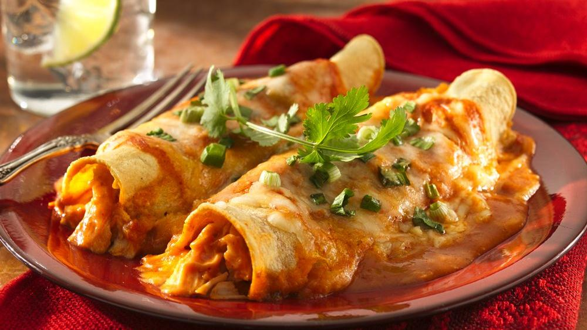

| Measurement | Description |
|---|---|
| 1 T. | tomato paste |
| 1/4 c. | flour |
| 3 T. | chili powder |
| 1 1/2 tsp. | salt |
| 1/4 tsp. | pepper |
| 4 c. | water |
| 1 lb. | boneless skinless chicken breast |
| 8 oz. | cheddar cheese, shredded |
| 1 | yellow onion, diced |
| 8 | medium-sized flour tortillas |
SAUCE: Brown tomato paste in sauce pan on MH. Mix dry ingredients separately and slowly whisk in cold water. Add water + dry ingredient mixture to sauce pan and whisk into paste. Stir constantly on MH/M until sauce boils + thickens. ENCHILADAS: Bake chicken and shred with forks; set aside. Brown onion in large pan; mix in half of the enchilada sauce and all of the pulled chicken. Roll tortillas with chicken mixture + cheese. Spoon some enchilada sauce into bottom of pan, arrange enchiladas, and cover with remaining sauce. Sprinkle w/cheese and cook covered on 425 for 35 minutes. Remove foil for last 5 minutes in oven.

| Measurement | Description |
|---|---|
| 1 T. | olive oil |
| 1 c. | onion, chopped |
| 2 cloves | garlic, minced |
| 1/2 tsp. | dried thyme |
| 1 tsp. | dried basil |
| 5 oz. | chopped spinach |
| 2 | small roasted red peppers |
| 5 | eggs |
| 1 c. | asiago cheese |
| 1/2 tsp. | salt |
Preheat oven to 400 degrees. Oil or spray a 9" pie pan. Heat olive oil in pan over high heat and sautee onion. Add garlic, thyme, basil; stir 1 minute. Add spinach and toss to wilt. Remove mixture into large bowl. When cooled slightly, add peppers, eggs, half of the cheese and salt; combine. Pour into pie pan and top with remaining cheese. Bake 15-20 minutes until set & slightly puffed in center.